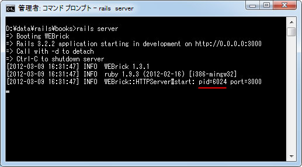

WEBrickを使ったアプリケーションの起動
Railsアプリケーションはサーバ側で動作するアプリケーションですので別途リクエストを受けるためのWebサーバが必要となります。本場環境ではApacheなどのWebサーバと組み合わせて利用することになると思いますが、RailsにはWEBrickというWebサーバが付属しており、別途Apacheなどを用意しなくても簡単にローカル環境で動作確認を行うことができます。
今回はWEBrickを使ってアプリケーションを実際に動作させてみます。
1.WEBrickの起動
2.Railsアプリケーションへのアクセス
3.WEBrickの停止
WEBrickの起動
ではコマンドプロンプトを起動し、起動させたいアプリケーションのルートディレクトリに移動して下さい。
次のように入力して下さい。
rails server
WEBrickサーバが起動し、ブラウザ経由でアプリケーションにアクセスすることができるようになります。起動完了するまで1分弱かかりますので少しこのまま待って下さい。次のように表示がされれば起動完了です。
Railsアプリケーションへのアクセス
WEBrickはポート番号として3000を使用しています。よってブラウザからWEBrickへアクセスするには次のURLへアクセスして下さい。
http://localhost:3000/
アプリケーションの初期画面が表示されます。では画面上部の「About your application’s environment」と書かれたリンクをクリックして下さい。RubyやRailsのバージョン、実行しているアプリケーションのルートディレクトリ、設定されているデータベースなどアプリケーションに関する情報が表示されます。
データベースとしてSQLite3を使用する設定にしている場合、SQLiteは必要になった時に自動でデータベースが作成されるため、この時点でデータベースが作成されます。「(Railsアプリケーションのルート)\db\」を見て下さい。
"development.sqlite3"というファイルがSQLite3で作成されたデータベースです。
またコマンドプロンプトを見ていただくと、WEBrickへのアクセスログのようなものを標準出力に書き出しています。
ここに書き出された内容はログにも記録されています。「(Railsアプリケーションのルート)\log\」を見て下さい。
"development.log"というファイルがログファイルです。テキストファイルですのでエディタで中身を見てみると、コマンドプロンプトに表示されているものと同じ内容が書き込まれています。
WEBrickの停止
WEBrickサーバを停止するには、起動するために使ったコマンドプロンプト上で[Ctrl]+[c]を押して下さい。
本当はこれで停止するはずなのですが、何故か私の環境ではまったく停止しませんでした。そこで別のコマンドプロンプトを起動し、次のコマンドを実行します。
taskkill /pid xxxx /f
"xxxx"にはPIDの値を入力します。PIDはWEBrickを起動した時に表示されています。(値は毎回異なります)。

今回のPIDは"6024"でしたので、次のようにコマンドプロンプトで実行しました。
taskkill /pid 6024 /f
するとWEBrickを起動させていたコマンドプロンプト上で次のように表示されます。
[y]を押したあとで[Return]キーを押して下さい。WEBrickサーバが停止します。
通常はこのようなことをしなくても、コマンドプロンプト上で[Ctrl]+[c]を押せば停止させることができます。
( Written by Tatsuo Ikura )

著者 / TATSUO IKURA
初心者～中級者の方を対象としたプログラミング方法や開発環境の構築の解説を行うサイトの運営を行っています。